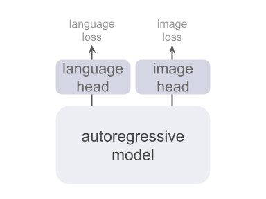

In this blog, we try to look at unified multimodal generative (omnimodal) modeling from first principles. We believe that omnimodality is an interface problem. What we want is a single learning/serving interface that scales across modalities and tasks defined on these modalities.
The Bet: Latent space is the unified interface and autoregression is sufficient.
Disclaimers: This blog is deliberately opinionated, and we tune down the notational rigor of the mathematics: it reflects our own intuitive throught process and way of organizing ideas that leads to NEPA, not a theory of deep learning or a definitive statement. Many claims are closer to educated positions and self-consistent narratives than to rigorous theorems or empirical facts; readers should treat them as our subjective framing, useful only as they help to convey what we believe what our work implies. The blog is edited with help from an LLM.
Why Latent Space
By omnimodality, we mean that multiple observation channels (images, text, audio, video, tactile, etc) can all serve as the context and that the system can respond in any modality as well. A shared latent space can be a unified interface where both inputs and outputs are modality-agnostic: different modalities enter and exit through the same shared representation, and the core training signal operates on embeddings rather than modality-specific decoders.
One tempting story is the Platonic Representation Hypothesis (PRH):1 “Neural networks, trained with different objectives on different data and modalities, are converging to a shared statistical model of reality in their representation spaces.” In this view, different sensory inputs (for example, images and text) provide complementary observations of the same underlying reality, and representation learning is expected to converge to a shared representation of reality as we scale model size, data, and task diversity.
We think PRH is a useful intuition, but a misleading justification for latent space as a unified interface. Even if there is one reality, different sensors do not, in general, admit a single shared statistical representation: they observe different functions of the world, with different invariances and different blind spots. Considering the following thought experiment:

Vision and touch are unlikely to converge to the same latent geometry: touch directly measures temperature, while RGB video at best provides weak, indirect cues. To see why, compare two queries: (i) “what is it?” and (ii) “is it hot?”. The first can often be answered from appearance. The second depends on physical state you might not see at all. The point is not the candle itself, but the structure of the problem: the same sensory evidence can be consistent with different realities. So there is no single canonical “shared representation”: under partial observability, multiple internal states are equally consistent with the evidence and equally sufficient for the training objectives.
A weaker claim we rely on is more pragmatic: each modality converges toward its own best predictive representation for the aspects of reality it can reliably sense and predict, and there is no reason these optima must be the same across sensors. A shared latent space is not a single representation of reality that every modality must occupy, but a common space in which each modality lives on (and moves within) a subspace, typically with substantial overlap on shared factors, and modality-specific directions for what only that sensor can capture.
Under this lens, latent space is a practical interface for omnimodality. We do not need latents to be “the” reality; we need a shared currency that (a) many modalities can map into, (b) many queries and output heads can read from, and (c) can carry uncertainty when the world is underdetermined (e.g., real candle vs. screen candle). In short, the target is a predictive protocol: easy to condition, update, and decode when needed. This is why we bet on latents: they turn many-to-many translation into a hub-and-spoke system. We do not claim this is the only route, but it is a clean, scalable interface for omnimodality, consistent with the same “packaging” argument that favors autoregression.
Why Autoregression
Our goal is not to pick a “best generation algorithm,” but to choose a unified modeling interface: a single way to train and serve models across tasks and modalities without inventing a new objective each time. In the omnimodal setting, the core difficulty is not that images, audio, and language are “different,” but that many formulations force us to change what the model predicts whenever the modality changes (discrete symbols here, continuous signals there, thus modality-specific heads and losses). A scalable interface should avoid this: adding a new modality should not require a new prediction space or a new learning rule.
Autoregression is a minimal answer to this interface problem. Given any target \(y\), we choose an ordering and write it as a sequence of variables \(z_{1:T}\) (tokens, patches, actions, fields, etc.). Learning then reduces to a single repeated subproblem: predict the next element from its context. Formally, conditioned on any input \(x\) (which can itself be empty), we factorize the conditional distribution using the chain rule:
\[ p_{\theta}(z_{1:T} \mid x) = \prod_{t=1}^{T} p_{\theta}\bigl(z_t \mid x, z_{<t}\bigr). \]
From this perspective, “time” or “sequence” is just an indexing device: we choose a partial ordering over variables that defines what counts as context \(z_{<t}\) and what counts as the next state \(z_t\).2 In some domains the index has a physical meaning, such as temporal steps in language, audio, or control; in others it is an artificial but convenient schedule over spatial locations, resolution levels, latent refinement steps, or even iterations of a denoising or planning procedure.3 Once such an ordering is fixed, the same autoregressive rule applies and we do not need to change the learning objective when we move from one domain or representation to another.
Autoregression, thus, can be seen as a universal learning interface: learn to predict the next variable from its context, whatever those variables represent. In this view, many kinds of problems such as language modeling, visual perception, control, reasoning, and even self refinement in iterative solvers can all be expressed as different ways of using the same predictive mechanism.
Observations
Once we pick an ordering, we just repeatedly predict “the next thing” from context. The remaining question is what that “thing” lives in, i.e., what target space we autoregress over. In practice, today's approaches mostly fall into two families: autoregression over categorical tokens and continuous tokens, each clean in isolation but awkward to unify.
| AR Algorithm | Prediction Target Space | Suitable Modality | Training Objectives | Representative Examples |
|---|---|---|---|---|
| Categorical Token AR (Symbols) | Predefined Discrete Symbols (Token) | Discrete (text, pixel, ...) | Probability-Based Objectives (cross-entropy, negative log-likelihood, ...) | GPT4, iGPT5, VAR6, LlamaGen7 |
| Continuous Token AR (Signals) | Predefined Continuous Symbols (Value) | Continuous (patch, audio, ...) | Vector-Based Objectives (L1, L2, diffusion, velocity flow, ...) | AIM8, MAR9 |
| Latent AR (Representations) | Learned representations (Embedding) | Any | Any | CPC10, V-JEPA11, NEPA |
Categorical Token AR predicts the next element as a predefined discrete symbol and is typically trained with cross-entropy. This fits text naturally, and it can be extended to other domains by introducing discretization (pixel tokens, codebooks, learned codecs). But that extension is itself modality-specific: you must define or learn a tokenizer/codec for each new signal type, and the interface becomes tied to those design choices.
Continuous-Token AR predicts the next element as a predefined continuous signal and is trained with regression or density-style losses. This fits raw signals such as pixels, patches, or audio samples. However, it does not provide a natural interface for inherently symbolic outputs (language, programs, etc) without adding extra machinery.

This is why omnimodality is hard to achieve by mixing these two families directly. Real systems must handle both discrete and continuous input modalities, and sometimes produce both kinds of outputs. The usual workaround is a multi-head design with separate output spaces and objectives, which then requires careful loss balancing and keeps “what the model predicts” modality-dependent.12,13
Latent AR, as we argued earlier, is the clean unifier: instead of predicting raw symbols or raw signals, we predict latents / embeddings. Embeddings are not a fixed, natural target space; they are learned. But that is precisely what makes them useful as an interface: different modalities enter and exit, while the core autoregressive objective stays the same. In other words, embeddings let us make autoregression itself modality-agnostic, and push modality-specific details to the boundary.
CPC and V-JEPA were early pioneers here. CPC uses a multi-component contrastive matching pipeline (encoder, context model, scoring head, and large negative pools), which adds substantial system complexity and makes scaling less straightforward than modern single-objective training recipes; JEPA-style models predict target representations, but typically introduce a second (target) encoder and predictor machinery to prevent collapse. These designs work, but they are not minimal interfaces where future work can build on.
Next-Embedding Prediction
As a concrete first step toward unified and minimal latent autoregression, we propose to train a model to generatively and autoregressively predict a shared latent representation, rather than directly generating each modality in its raw space. In practice, this means treating the internal embeddings produced by the model as the sequence to be modeled, and using a single conditional predictor to forecast the next embedding from the past ones.
# f: embedding layer
# h: autoregressive model
for pixel_values in loader: # x, [B, H, W, C]
input_embed = f(pixel_values) # z, [B, T, D]
pred_embed = h(input_embed) # z_hat, [B, T, D]
loss = Dist(input_embed, pred_embed)
loss.backward() # back-propagate
update(f.param, h.param) # update parameters
def Dist(z, z_hat):
target = z.detach() # stop gradient
pred = z_hat[:, 0:T-1, :] # shift, [B, T-1, D]
target = target[:, 1:T, :] # shift, [B, T-1, D]
# Use any suitable distance metric.
pred = normalize(pred, axis=-1) # l2-norm
target = normalize(target, axis=-1) # l2-norm
return -(pred * target).sum(dim=-1).mean()NEPA is deliberately minimalistic: we use a single vision backbone, view its patch embeddings as the latent sequence, and train it with one next-embedding objective. See Figure 4 and Algorithm 1 for details of NEPA; full quantitative results and ablations are reported on the [NEPA homepage].
This differs from the common two-stage latent generative pipeline. In the standard story, you first learn a codec (an encoder/decoder) to define a latent space, then train a separate generative model over those fixed latents and decode only at the end. Sander Dieleman's overview is a crisp reference for why this two-stage design is practical and widely used in modern generation.14 NEPA is closer to a single-stage alternative: we treat the latent stream as the training interface itself, and learn representations through next-embedding prediction rather than via an explicit reconstruction decoder. In other words, we are not claiming a canonical “true” latent space, only a shared predictive protocol that different modalities can enter and exit.
We choose to instantiate this idea first in vision. Autoregressive models have been extremely successful for text, but autoregression over images has mostly focused on pixels or discrete visual tokens, which leads to heavy decoders and slow sampling. At the same time, some language models (e.g., GPT-2) tie their input and output embedding matrices, so next-token prediction can be viewed, up to that embedding layer, as a form of next-embedding prediction.15 Verifying the same principle directly in the image domain, at the level of native patch embeddings, is therefore a natural starting point.
Final Remarks
We rethink omnimodal modeling from first principles and arrived at a minimal proposal: use a single autoregressive model to perform next-embedding prediction in a shared latent space, instead of defining separate generative losses for every modality.
We show in vision by treating native patch embeddings as the sequence to be modeled, and train a causal transformer to predict the next embedding from its context. Despite its simplicity, this recipe already yields competitive representations on standard benchmarks, suggesting that expressive representations may come from learning to predict in embedding space rather than from complex reconstruction pipelines. The broader question is now how far this next-embedding view can be pushed across different embedding interfaces, orders, multi-modalities, and larger scales. These questions are certainly not answered here yet, but we hope this perspective will help motivate future work.